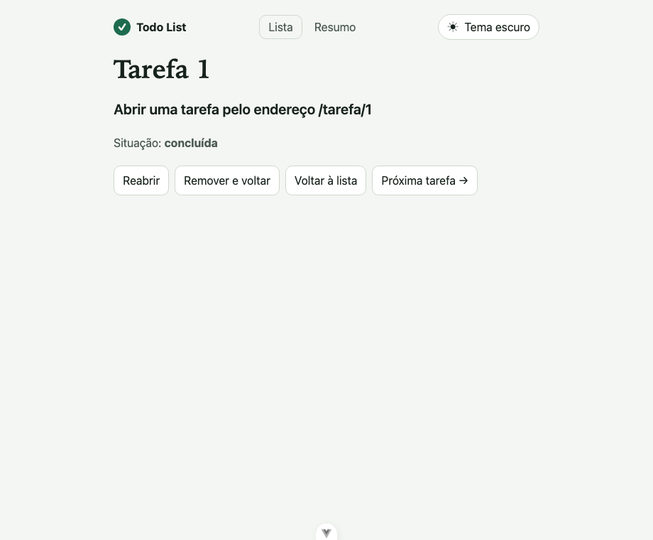
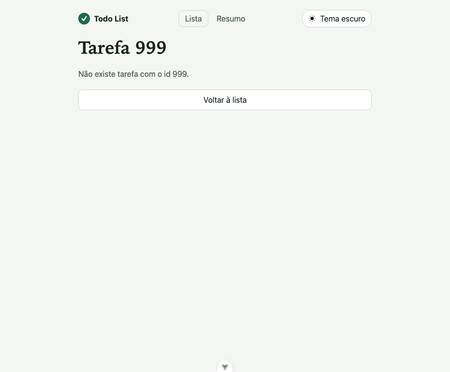
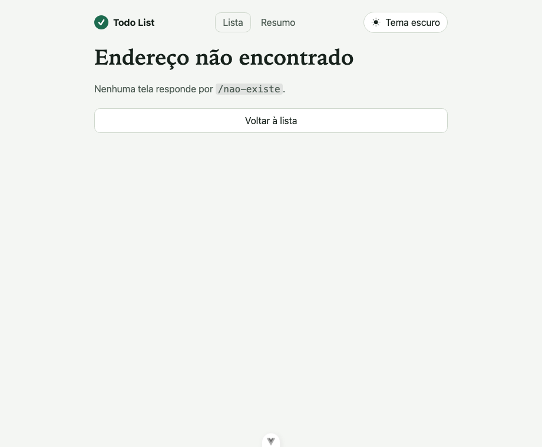

Um endereço para cada tarefa
As rotas da etapa 16 são um menu fixo: duas telas, duas linhas na tabela. Hoje o endereço passa a carregar dado: /tarefa/1, /tarefa/2, /tarefa/417 — uma linha só na tabela, para todas as tarefas que existirem.
| Critério | Evidência |
|---|---|
| Parâmetro | /tarefa/2 abre a tarefa 2, inclusive depois do F5 |
| Dois “não existe” | /tarefa/999 e /nao-existe dão mensagens diferentes |
| Componente reaproveitado | Explicar por que ir de /tarefa/1 a /tarefa/2 não remonta a tela |
/tarefa/:id e existem 4 tarefas. O que acontece ao abrir
/tarefa/999? E /receita-de-bolo?
Parâmetro, useRoute, useRouter e curinga
routes: [
{ path: '/', name: 'lista', component: ListaView },
{ path: '/resumo', name: 'resumo', component: SobreView },
// :id casa com qualquer coisa depois de /tarefa/
{ path: '/tarefa/:id', name: 'tarefa', component: TarefaView },
// curinga: SEMPRE por último
{ path: '/:caminho(.*)*', component: NaoEncontradaView },
]const route = useRoute() // onde estou
const router = useRouter() // com quem eu navego
// params.id é SEMPRE texto: "2", nunca 2
const tarefa = computed(() =>
tarefas.value.find((t) => t.id === Number(route.params.id)))
router.push('/') // navegar pelo código| Peça | O que é |
|---|---|
:id | Parâmetro: a parte variável do caminho |
route.params.id | O valor que veio no endereço — texto |
useRoute() | O endereço atual (de onde estamos) |
useRouter() | O roteador (para onde vamos) |
router.push() | Navegar sem clique, a partir do código |
/:caminho(.*)* | Curinga: casa com o que sobrou |
<RouterLink :to="{ name: 'tarefa', params: { id } }">Texto, sempre. /tarefa/2 entrega "2". Sem o Number(), "2" === 2 é false — e nada no Console.
Abrir, recarregar, navegar e errar o endereço

Endereço: /tarefa/1. Repare que nem Lista nem Resumo estão marcados — nenhum dos dois é a rota atual.

/tarefa/999 — a rota casou; o dado é que não existe.

/nao-existe — nenhuma rota casou; entrou o curinga.
| Ação | Resultado |
|---|---|
| Clicar em Abrir | Endereço vira /tarefa/1 |
| F5 ali | A mesma tarefa continua aberta |
| Próxima tarefa → | Muda só o parâmetro; o conteúdo acompanha |
| Remover e voltar | router.push('/') leva à lista |
ObserveAo ir de /tarefa/1 para /tarefa/2, o componente TarefaView é criado de novo ou reaproveitado?
Prática: a tela da tarefa e o curinga
- Ponto de partida
- A sua cópia da etapa 16. A pasta da etapa 17 já traz a solução.
- 1
- Rota
/tarefa/:ideTarefaView.vuecomuseRoute: título, situação e um botão para concluir. - 2
- Em
TarefaItem.vue, o link Abrir usando:tocomnameeparams. - 3
- Rota curinga e
NaoEncontradaView.vue, mostrandoroute.fullPath. - Evidência
/tarefa/2sobrevive ao F5;/tarefa/999e/nao-existedão mensagens diferentes.
Dica 1
A tarefa pode não existir. Trate o caso com v-if/v-else antes de ler tarefa.titulo — senão o Console mostra Cannot read properties of undefined.
Dica 2
O curinga tem de ser a última rota do array. Se ficar antes, ele engole todas as outras.
Mostrar solução (após a tentativa)
// router/index.js — depois das outras rotas
{ path: '/tarefa/:id', name: 'tarefa', component: TarefaView },
{ path: '/:caminho(.*)*', name: 'nao-encontrada',
component: NaoEncontradaView },// TarefaView.vue
const route = useRoute()
const { tarefas } = useTarefas()
const tarefa = computed(() =>
tarefas.value.find((t) => t.id === Number(route.params.id)))<template v-if="tarefa"> … </template>
<template v-else>
<p>Não existe tarefa com o id {{ route.params.id }}.</p>
</template>O endereço existe; o dado é outra história
| Endereço | A rota casou? | O dado existe? | O que mostrar |
|---|---|---|---|
/tarefa/1 | Sim | Sim | A tarefa |
/tarefa/999 | Sim | Não | “Não existe tarefa com o id 999” |
/tarefa/abc | Sim | Não | A mesma mensagem |
/nao-existe | Não | — | Endereço não encontrado |
O roteador só sabe de formato de endereço. Ele não faz ideia de quais tarefas existem — e não deveria fazer: amanhã elas vêm de uma API, e aí a pergunta “existe?” só tem resposta depois de uma requisição.
Numa aplicação com servidor, os mesmos quatro casos viram:
| Situação | Resposta HTTP |
|---|---|
| Endereço sem rota | 404 do servidor |
| Rota certa, registro inexistente | 404 da API |
| Rota certa, sem permissão | 403 |
Por isso as mensagens são diferentes: quem lê precisa saber se errou o endereço ou se o item acabou. “Algo deu errado” não ajuda ninguém a decidir o que fazer em seguida.
Investigação: a tela que trava na primeira tarefa
const tarefa = ref(null)
onMounted(() => {
tarefa.value = tarefas.value
.find((t) => t.id === Number(route.params.id))
})Endereço Título na tela
/tarefa/1 "Abrir uma tarefa pelo endereço /tarefa/1"
/tarefa/2 "Abrir uma tarefa pelo endereço /tarefa/1" ← errado
/tarefa/3 "Abrir uma tarefa pelo endereço /tarefa/1" ← errado
Console: vazio. Nenhum erro, nenhum [Vue warn].Dica
O endereço muda, mas a rota é a mesma: /tarefa/:id. O que o Vue Router faz com o componente que já está na tela?
Mostrar a causa e as saídas
O componente é reaproveitado, não recriado — então onMounted não roda de novo. Três saídas:
computedem cima deroute.params— o que a etapa faz.watch(() => route.params.id, …)quando for preciso buscar dados a cada mudança.<RouterView :key="$route.fullPath" />para forçar a recriação — a marreta: perde o ganho de reaproveitar.
Mesma família do :key pela posição, da etapa 10: o framework reaproveita, e o que não é reativo fica para trás. Lá era o texto digitado; aqui é a leitura feita uma vez só.
Pesquisar: reagir à mudança de parâmetro
Vue 3 com <script setup> e Vue Router 4. Tenho a rota
/tarefa/:id e, na tela, leio o parâmetro no onMounted. Ao ir de
/tarefa/1 para /tarefa/2 o conteúdo não muda, e o Console não
mostra nada.
Explique por que isso acontece e mostre as formas de corrigir,
dizendo quando usar cada uma. Cite a seção da documentação
oficial do Vue Router.
Use Composition API. Não sugira recarregar a página.| A resposta deve dizer | Sinal de resposta ruim |
|---|---|
O componente é reaproveitado; onMounted não roda de novo | Diz que é “bug do Vue” ou manda limpar o cache |
computed para derivar; watch para buscar dados | Só dá uma saída, sem dizer quando usar |
| Cita “Reacting to Params Changes” | Link inventado, ou documentação do Vue Router 3 |
Menciona o :key no RouterView como último recurso | Apresenta o :key como a solução padrão |
Onde conferir
Vue Router 3 usava beforeRouteUpdate e this.$route. Se a resposta vier assim, é material velho.
Verificação sem IA · fecho da Unidade 5
- Por que
/tarefa/999e/nao-existemostram telas diferentes? - Por que
Number(route.params.id)e nãoroute.params.id? - Ir de
/tarefa/1para/tarefa/2recria o componente? O que isso exige de quem escreve a tela?
O que a Unidade 5 deixou pronto
- Telas separadas em
views/, cada uma com o seu endereço - Estado compartilhado fora da árvore de componentes
- Endereço que sobrevive ao F5, volta no botão Voltar e cabe num link
O que vem a seguir
As tarefas ainda nascem escritas no código. Na Unidade 6 elas vêm de uma API — e a tela ganha o estado que falta: carregando.